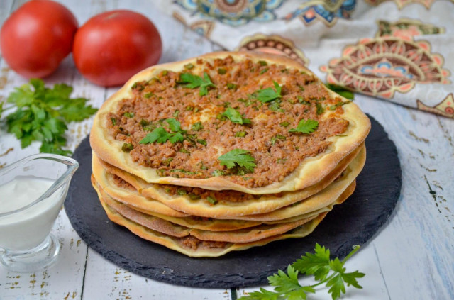

ООО "Русский дар" 
Вернутся в начальный раздел | Вернутся на главную страницу
| Ингредиенты для теста: | Ингредиенты для начинки: |
|---|---|
|
|
Оборудование: миска большого размера, вилка, блендер, целлофановый пакет, нож, ложка столовая, скалка, духовка и пергамент.

Для начала подготовьте продукты для теста.

Возьмите большую миску, просейте в нее муку. Советую не всыпать всю муку сразу, оставьте немного, досыпете потом при необходимости. Сделайте в центре небольшое углубление. Насыпьте в него сахар и дрожжи. Воду подогрейте до температуры около 38 градусов - она приятная на ощупь, но не обжигает. Это важно, так как вода будет активировать дрожжи. Налейте небольшое количество воды в ямку с дрожжами, слегка размешайте их вилкой, стараясь не достать до дна.

Оставьте дрожжи на 10 минут, за это время они должны активироваться - запузыриться и подняться шапочкой. Первый раз встретила такой способ активации - сразу в муке, мне понравилось.

Всыпьте соль и влейте оливковое масло.

Постепенно вливая оставшуюся воду замесите тесто, сначала вилкой, а затем рукой. Мне пришлось убрать часть муки, чтобы не доливать еще воды, слишком сухое получалось тесто. Поэтому я и сказала в начале, что не надо сразу всыпать всю муку.

Выложите тесто на стол и вымесите тесто до гладкого, однородного состояния.

Положите колобок теста в миску, накройте ее и уберите в теплое место для подъема на час-полтора.

Пока тесто поднимается, приготовьте начинку. Овощи и зелень предварительно помойте и обсушите. Специи можете использовать любые, какие любите - чем их больше, тем вкуснее начинка.

Помидоры, очищенный лук и перец порежьте на куски. Сложите их в блендер и взбейте до состояния пюре. Но не усердствуйте слишком сильно - пусть останутся небольшие кусочки овощей, фарш с ними будет выглядеть аппетитнее.

Возьмите миску, положите в нее фарш. Влейте перемолотые овощи. Добавьте томатную пасту, мелко нарезанную зелень, раздавите чеснок. Всыпьте специи, перец и соль.

Перемешайте все ингредиенты до однородности. Начинка готова.

Тесто тем временем должно увеличиться в объеме в два-три раза. Слегка обомните его, выпуская лишний воздух.

Выложите тесто на доску, присыпанную мукой, вытяните из него длинную колбаску. Разделите тесто на 8 равных частей.

Каждую часть раскатайте скалкой в тонкую лепешку. Она должна быть очень тонкой - тогда края получатся хрустящими.

Возьмите противень. Застелите его бумагой для выпечки. Выложите на него заготовки теста. На каждый кружок положите примерно 1,5 столовые ложки начинки. Размажьте ее тонким слоем при помощи ложки, оставляя небольшую полоску теста с края.

Пеките лепешки в духовке при температуре 230°С около 10 минут. Края должны стать румяными. Пока пекутся первые лепешки, подготовьте следующую партию. Лучше их делать чуть меньше по диаметру, чтобы помещалось сразу три штуки на противень. Тогда процесс займет меньше времени. Подавайте лахмаджун горячими, с овощами и йогуртом.

Шаг 1, Шаг 2, Шаг 3, Шаг 4, Шаг 5, Шаг 6, Шаг 7, Шаг 8, Шаг 9, Шаг 10, Шаг 11, Шаг 12,Шаг 13, Шаг 14, Шаг 15, Шаг 16.